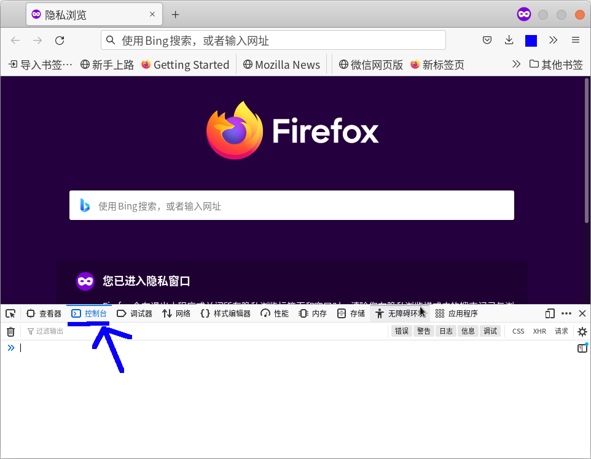
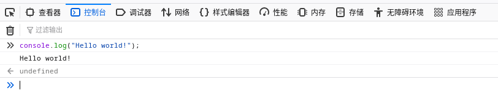
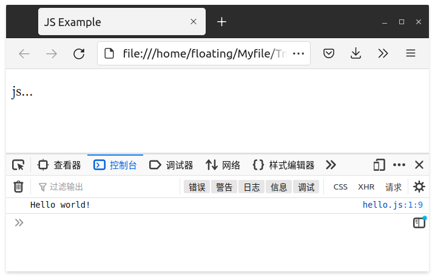

JS —— 第一步
本文按照 Mozilla 贡献者基于 CC-BY-SA 2.5 协议发布的以下文章改编:
JavaScript（以下简称 JS）是一种脚本，一门编程语言，它可以在网页上实现复杂的功能，网页展现给你的不再是简单的静态信息，而是实时的内容更新，交互式的地图，2D/3D 动画，滚动播放的视频等等。
它是标准 Web 技术蛋糕的第三层，其中 HTML 和 CSS 我们已经在其他部分进行了详细的讲解。
JS 的应用场合极其广泛，简单到幻灯片、照片库、浮动布局和响应按钮点击，复杂到游戏、2D/3D 动画、大型数据库驱动程序等等。这里我们讲的主要是浏览器里面的 JS 。当然配合 Nodejs 你也可以让 JS 成为一个应用程序。
JS 所做的，就是让网页“动”起来，让网页不再是一些静态的文本和样式，而拥有实际的功能（比如登录帐号，上传文件之类）。加上了这个之后，我们总算是可以做出一个具有完整的功能的网站了。
API
JS 的可以使用应用程序接口（Application Programming Interfaces（API）），它们可以用来操作很多的。API 是已经建立好的一套代码组件，可以让开发者实现原本很难甚至无法实现的程序。
就像现成的家具套件之于家居建设，用一些已经切好的木板组装一个书柜，显然比自己设计，寻找合适的木材，裁切至合适的尺寸和形状，找到正确尺寸的螺钉，再组装成书柜要简单得多。而且使用 API 还可以方便别人理解你的代码。
我们最常用的 API 就是 DOM（Document Object Model——文档对象模型），它用来对 HTML 进行一些读取和修改操作，这也是很多网站的动态效果的实现形式（不过能用 CSS 实现的还是尽量选择 CSS 比较好）。以后我们会做详细介绍。
当然你也可以使用其他的 API，比方说你可以调用 Canvas API 来绘制图形，或者调用地图的 API 来了解当前位置之类。我们的教程暂时不会涉及这些，你以后可以自己查阅它们的文档进行使用。
算法
编程语言里面，很重要的一点就是算法。算法相当于是下一系列的指令给计算机，让计算机执行得到结果并且输出。这和让人去做一些事情是一样的。比如导航指路的时候：
100 米后右转
直行 500 米
掉头
……
这里一系列的指令就可以看成是算法。只是为了让电脑看懂，我们使用的语言从中文变成了编程语言。
Hello world
按照所有编程语言教程的惯例，我们会实现一个输出 Hello world! 的程序，用来演示如何运行 JS 。
Web 控制台
运行 JS 代码最好的地方，当然是浏览器。
打开浏览器，在一个标签页下面打开控制台（通常是按下 F12 来打开），你会看到浏览器的调试窗口，转到 控制台（Console），就可以在这里直接运行一些简单的 JS 代码了（别问我为啥无痕）。

在这个控制台当中输入下面的内容，就可以输出一个 Hello world! 了。
1 | console.log("Hello world!"); |
运行起来大概是这样。

下面那个 undefined 我们以后再解释。我们这个例子写成纯文字版本就是这样子（ >>> 不是代码，只是用来表示这是个输入）。
1 | >>> console.log("Hello world!"); |
导入你的 JS
一般情况下面，我们会在 HTML 里面链接 JS（你总没有见过啥网站要你打开控制台输入代码的吧）。我们使用 <script></script> 标签来在 HTML 的 <body> 当中最末尾的地方插入 JS ，这是因为 HTML 是从上到下解析的，如果需要操作的东西排在 JS 后面，就不能被正常解析。下面是一些方式：
1 |
|
然后浏览器就会自动执行这些嵌入的 JS。
比如我们可以新建一个 hello.js 内容如下：
1 | console.log("Hello world!"); |
然后我们在同目录新建 index.html：
1 |
|
接着在浏览器里面打开，就可以在控制台里面看到 Hello world! 了。

运行原理概述
JS 是一种解释型语言。浏览器得到一段 JS 代码之后，就可以从上到下逐行读取代码，然后按照自己的方式去运行它们。比如我们刚刚的那个 Hello world 的示例程序，被浏览器读取后，浏览器在控制台里面留下了一行 Hello world! 。这就相当于一行一行告诉浏览器应该做什么，然后浏览器解析它得到结果。
当浏览器执行到一段 JS 代码时，通常会按从上往下的顺序执行这段代码。也就是你有时候需要注意一些顺序问题。如果你后面的代码需要用到前面的东西，比方说声明一个变量，你就要保证这两者的顺序。
最后
学习编程，语法本身并不难，真正困难的是如何应用它来解决现实世界的问题。 你要开始像程序员那样思考。一般来讲，这种思考包括了解你程序运行的目的，为达到该目的应选定的代码类型，以及如何使这些代码协同运行。想办法用一些数学模型去概括一些实际问题，这会非常有用。
现在 JS 或许还有些令人生畏，但不用担心。在课程中我们会循序渐进。下一课我们要开始介绍变量。